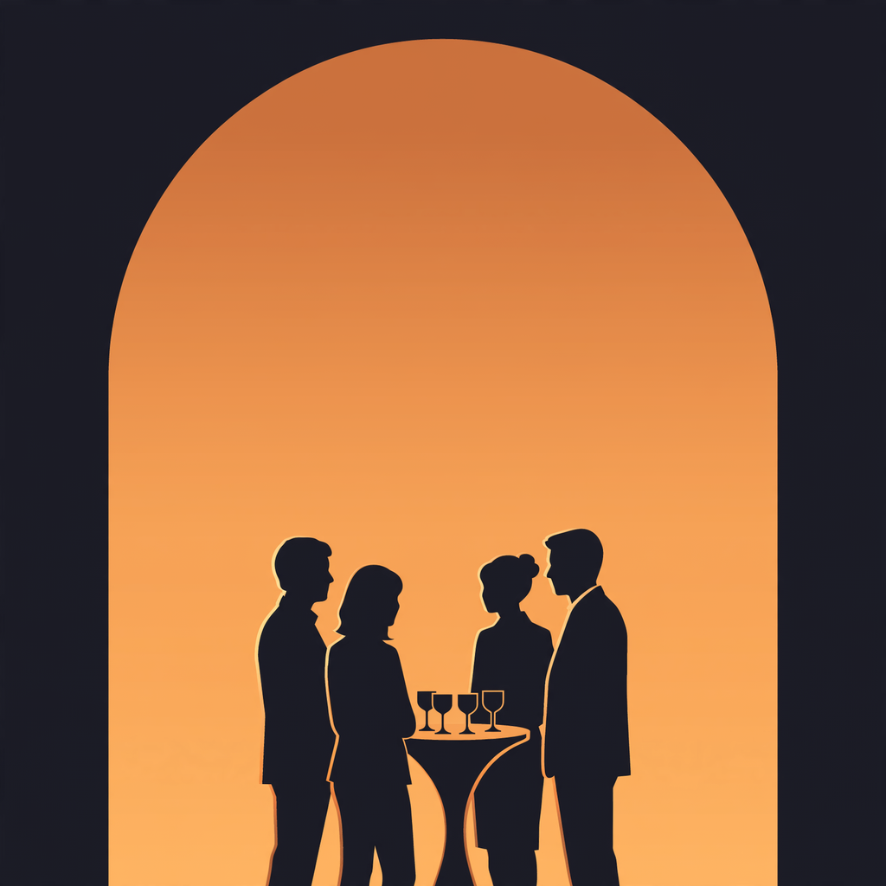
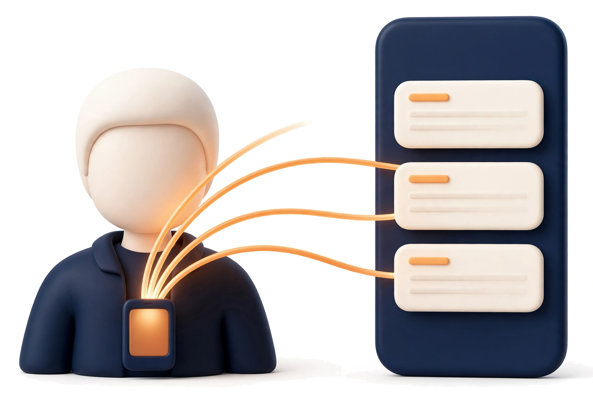

Hallwise
A name badge that remembers the room
Built on Meta's models
Meta Global AI Developer Hackathon
Oct 2026
0.8s
from an introduction to "met before", no model call
24/25
names right across 12 accents; 13 / 25 without hints
3–5s
per edge-finder pass on Muse Spark Open; 26–37 s on Spark
259
server tests, written at the event
Measured in rehearsals, Oct 27–29: synthetic voices in a living room and a real iPhone 17 Pro. Zero users yet.
The problem
Networking doesn't fail in the room. It fails the next morning: names forgotten, promises unsent, asides never heard.
What it does · one evening
01 · Connected
"Margaux may be Chloé's colleague." The moment she says her name.
02 · Heard
"Said to Julien, in French: one page, with numbers." What wasn't said to you.
03 · Checked
"No public page ties Julien to Corvane." From what they said; no card.
04 · Done
Your deck rebuilt as one page. Follow-ups written. An introduction worth making, and where to meet them next week.
How it works · nothing to type

Illustrations: Muse Image
Our code
4-channel audioyour voice, from abovenames as hints
Meta models
Muse Voice TranscribeMuse SparkMuse Spark Open · BasetenSpark + web searchSAM 3.1
Checked
every answer checkedfollow-ups · one page · introductions
Why now
2
wearables that remember your day, boughtAmazon bought Bee (Jul 2025); Meta bought Limitless (Dec 2025)
410
Limitless users asked for a personal CRMstill unbuilt when Meta bought it (Dec 8, 2025)